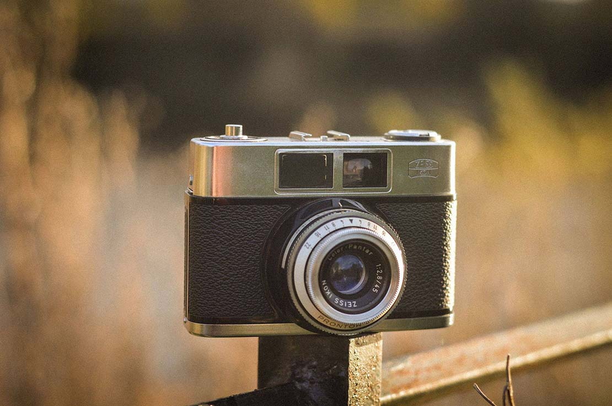
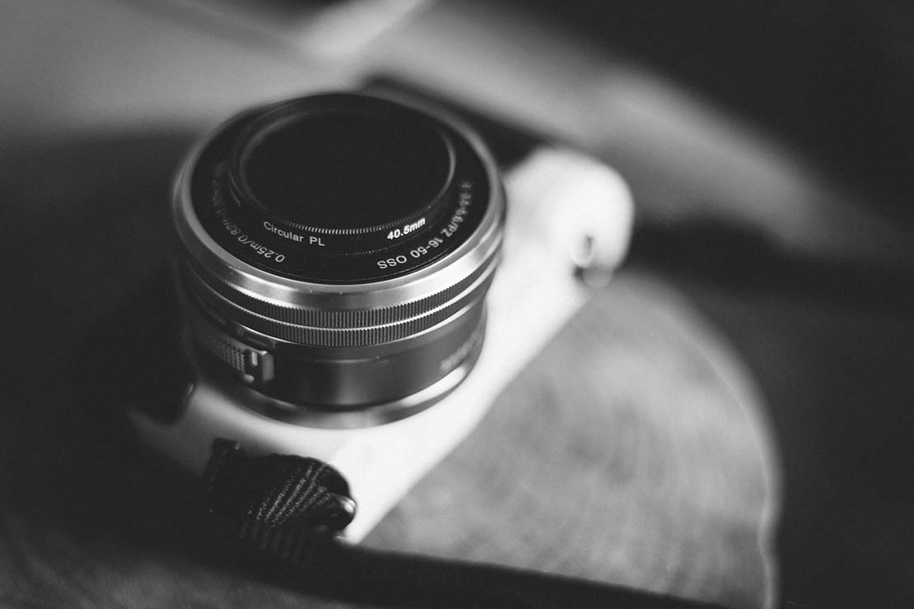

Nouvelle Caméra Expert XX
Nouveau modèle Expert full frame à découvrir chez Orinoco !

10 expos photo à faire cet été en France
Des frères Lumière à Agnès Varda, en passant par le Mali des années 1960 et les couleurs vues du Danemark : 10 expositions à découvrir cet été pour les amateurs de photographie et de cinéma.